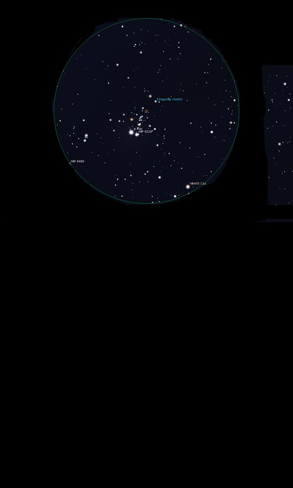

NGC 457
Open Cluster in Cassiopeia
NGC 457
Mag 6.4
The Owl Cluster, The ET Cluster, The Dragonfly Cluster, Caldwell
13
03/10/16
Perfect in 18mm, with φ Cas, 34 Cas, HIP 6242 forming
one of the 'eyes' at Mag 4.95 and HIP 6229 at Mag 6.95 forming
the other
To me its a perfect 'da da' shaped figure with arms
outstretched
φ Cas appears
quite yellow, with HIP 6229 slightly more orange
The most intense orange star is V0466 Cas, HIP 6231 which is a
pulsating variable star of Mag 8.65
Actually a rather sparse Open Cluster but the two 'eyes' and
its shape really bring it out
18/10/16
It is easy to see why with those two bright eyes visible in
the finderscope at Mags 4.95, in the case of φ Cas, 34 Cas, HIP 6242, and
6.95 for HIP 6229 with those outstretched arms, really neat
and easy to locate which is always a bonus!
02/11/16
As Callum Potter says in AN's October issue, where NGC 457 is
object of the month, 'this is a splendid Open Cluster'
I see it as a figure with arms outstretched, nearly upright in
my 18mm FOV which gives a loverly dark background to it
The brightest star, forming the right 'eye' is a loverly
yellow white, φ Cas, 34 Cas, HIP 6242
shining at Mag 4.95
The other 'eye' is formed by HIP 6229, much fainter at Mag
6.95
The other really interesting star forms the right 'shoulder',
V0466 Cas at Mag 8.65 is a pulsating variable star, a tiny
sharp dot and so red, fantastic